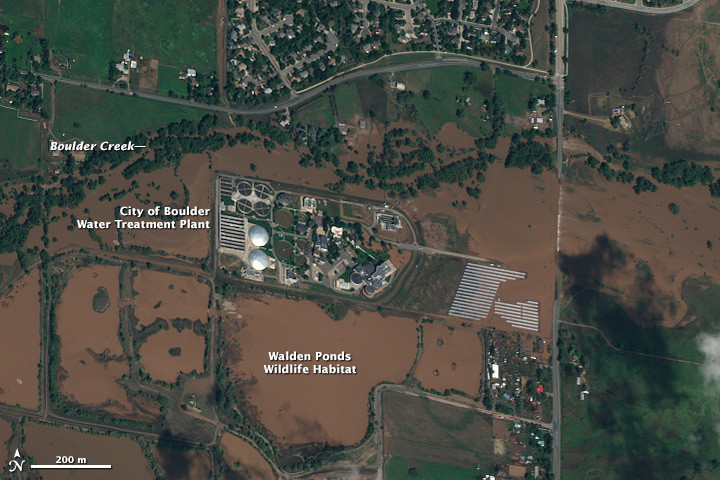
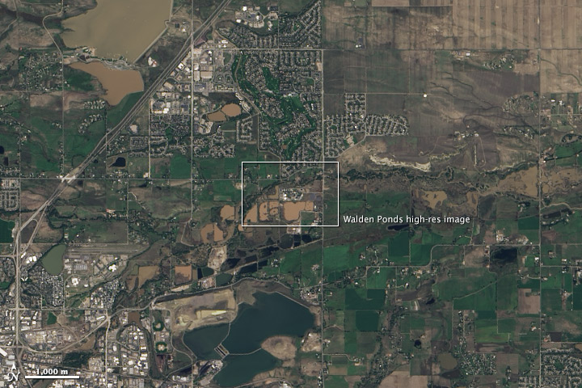
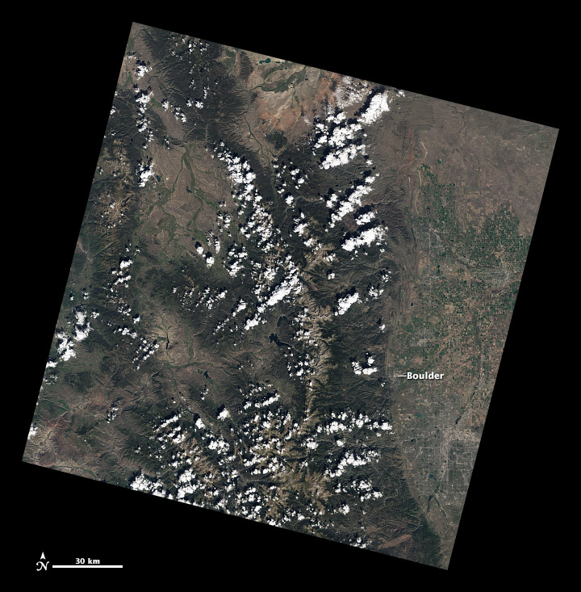
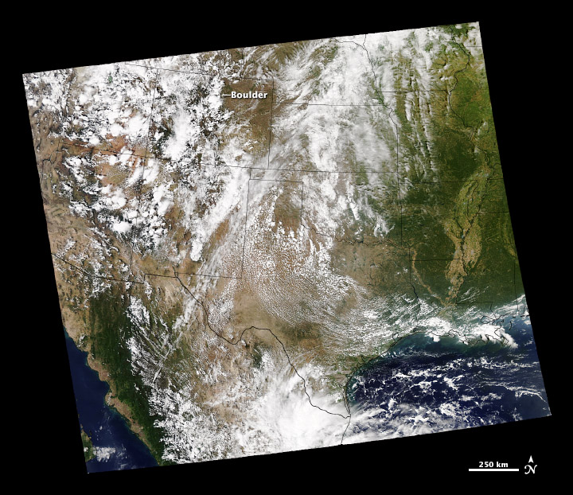

А07 · пара 1,5 ч · признаки · поле / камерал · карта
Дешифрирование
Выявление и опознавание на снимках объектов земной поверхности с последующим описанием (графическим, словесным, цифровым) и картографированием — тематическим или комплексным, в том числе топографическим. Геометрия блока уже должна быть; здесь — содержание изображения.
Общегеографическое дешифрирование
Топографическое — объекты легенды топокарты (гидрография, населённые пункты, дороги, растительность, рельеф). Ландшафтное — природно-территориальные комплексы и их границы. Методы те же, что у отраслевого; различаются легенда и полнота характеристик.
Отраслевое (тематическое) дешифрирование
Специальное: кадастр, лес, геология, сельхоз, ЧС. Топографическое дешифрирование — обязательный процесс создания и обновления карт (ГКИНП). Тематическое без топоосновы «висит» в воздухе.
Мелкомасштабный снимок беднее по содержанию даже при мелком GSD: генерализация. Крупный масштаб не значит «видно всё» — нужны признаки и выход в поле.




Полевой метод
Опознавание на местности, в том числе объектов, которые на снимке не изобразились или не читаются однозначно. Дорого и тяжело, но без него не закрыть провода, тип столба, этажность, характер угодий.
Аэровизуальный метод
Опознавание с борта (вертолёт, БВС-облёт). Быстрее поля по маршруту, хуже детализации у земли. Часто как рекогносцировка перед камералом.
Камеральный метод
Работа по снимку (орто, стереопара) без выхода: по демаскирующим признакам. Классификатор и нейросеть — камеральный метод с другой функцией решения. Контроль полевой выборкой никуда не делся.
Комбинированный метод
Камерально — основное покрытие легенды; в поле — то, что не читается. Рабочий стандарт топосъёмки, не «или–или».
Демаскирующие признаки
Свойства изображения, по которым объект опознают: тон (яркость), цвет, размер, форма, тень, текстура, структура, рисунок, связь с соседними объектами. Прямые — сам объект виден; косвенные — по тени, колее, дыму, фенологии.
Это не замена отечественных таблиц признаков, а порядок чтения кадра.
Динамическое аэрокосмическое зондирование (ДАЗ)
Изучение по снимкам временной динамики объектов за счёт серии разновременных кадров. Повышает и понимание процесса, и точность повторных измерений (изменение берега, карьера, снега).
← → пробел — слайды
F — полный экран
N — заметки докладчика